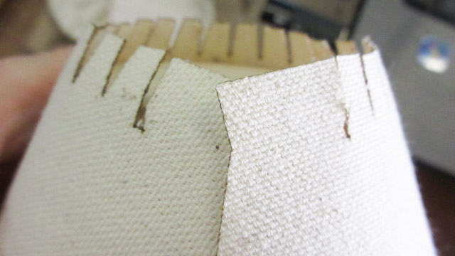

Composites - Part 2
Milling Design v3
Heat shield piece in PartWorks3D, these are the material size and margins settings. There's margins around it to leave space for the bit. Tabs to keep the piece attached to the material. Since the piece isn't taller than the material, it's 1mm below the surface.
All of the pieces after the roughing cut. 1/4" end mill, pass depth: 0.25 inches, stepover: 0.1 inches (40%). Spindle speed: 12000 rpm, feed rate: 4.0 inches/sec, plunge rate: 1.0 inches/sec. Strategy: Z Level - Raster Y, Profile: Last.
Note: Although this was the toolpath strategy used for these parts, there was a mishap with one of the outer mold pieces using this, so after this the strategy used was 3D Raster - Along X
Finishing cut in progress. It was cool to see from the blocks of the roughing pass, what the finishing pass revealed.
The measurement of the material was spot on enough that the cut didn't go all the way through, there was a paper thin layer of mdf left. :)
The pieces after the finishing cut. 1/8" tapered ballnose, stepover: 0.0113 inches (9.0%). Spindle speed: 12000 rpm, feed rate: 5.0 inches/sec, plunge rate: 5.0 inches/sec.
This is what the heatshield will look like. With the other piece attached onto it, it will be able to fit into the shell body:
Just imagine a much more improved version of this entering an atmosphere one day:
This was the gluing step. But I think I messed up the pieces with the clamps this way, because a few days later the other piece attached to the heatshield had moved.
Close ups of the pieces. The ridges in the heatshield are visible:
Laser Cutting Canvas v2
Laser cutter settings:
Speed: 86%
Power: 55%
Freq: 500 Hz
On an Epilog Mini 45 watts 24x12 (think it might have a 60w tube in it)
All of the pieces after laser cutting:
First try did not close all the way:
Adding a 2nd try. The edges look cool:

It wraps around now. View from underneath the shell body. These tabs will fold over:
Close up view of the ends of the canvas closing together:
Side view:

Flat view:
Heat shield with canvas pieces added:
This is how the tabs will fold over the edges. There's a bit of a radius.
Alignment will be tricky. Might see some of the cuts for the tabs:
Mold Design v4
Pieces fitting into the mold. There's about 3mm of clearance.
The mold pieces. Original thought of going with the half piece for the heatshield and cylinder piece was to later glue them together, and that it would be faster if the fabrication didn't go to plan to just redo a half piece.
Later on ended up changing this design from the half molds to full ones, because the half pieces would have a line down the middle which would take more post-processing time for the composite.
Special thanks to Evil Mad Science for their help with the cnc machine and laser cutter